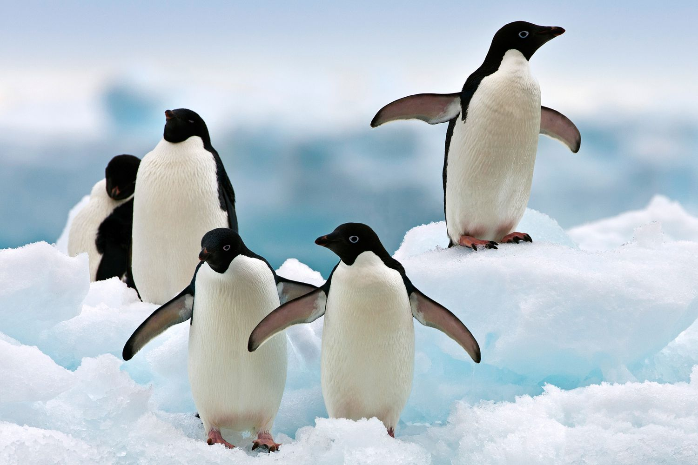

| KINGDOM | Animalia |
| PHYLUM | Chordata |
| CLASS | Aves |
| ORDER | Sphenisciformes |
| FAMILY | Spheniscidae |
| GENUS | Pygoscelis |
| SPECIES | Pygoscelis adeliae |
| KINGDOM | Animalia |
| PHYLUM | Chordata |
| CLASS | Aves |
| ORDER | Sphenisciformes |
| FAMILY | Spheniscidae |
| GENUS | Pygoscelis |
| SPECIES | Pygoscelis adeliae |
One of the smallest penguin species, these birds have white chest and belly as well as white bands, surrounding their eyes. The head and bill are black while the back of the animal is blue-black in color.
They have solid, tough, and coarse feet, which are pink in color. The nails on Adelie penguins' feet help them in climbing to their nests, situated on rocky cliffs. Also, they use the nails to push themselves when sliding on the surface of the ice. These birds possess webbed feet, which the animals use to move forward while swimming.
|  | |

Adeline penguins are diurnal birds. They are highly social and communicative animals, gathering into small colonies, where they live, socialize, forage, hunt as well as find protection from predators. When it comes to nesting, these penguins usually display extremely territorial behavior, sometimes even stealing nesting sites of each other.
Adelie penguins are migratory animals. Thus, in the winter, the penguin colonies are usually found in coastal areas, on large ice platforms. Then, with the approaching of the breeding season (at the beginning of spring and during summer months), the penguins migrate to the seashore, looking for ice-free areas, where they construct their nests.
Adelie penguins are carnivores (piscivores and molluscivore). Their diet primarily consists of krill. They will also consume other aquatic species, including silverfish, squid as well as crustaceans.
Adelie penguins form monogamous pairs, remaining together throughout their lives. During October-November, the birds travel to their breeding grounds, constructing nests from stones and loose pieces of grass. Typically, the female lays 2 eggs at an interval of 2 days, after which both parents incubate the eggs for around 36 days.
During the incubation period, the parents usually go out to sea to forage, leaving the nest one by one and taking turns with the eggs. Then, when the chicks are hatched, they again take turns to forage and feed the hatchlings, which are born semi-precocial and are not able to feed themselves.
The hatchlings are born with their down feathers. By the age of 4 weeks, they join a creche or group of other chicks, where they find protection. However, during this period the parents still continue feeding the chicks for about 56 days, after which the young are independent.
Industrial fishing is among notable threats to the species, reducing the numbers of fish and krill populations and causing food shortages in some areas of their range. However, the primary threat is environmental changes: populations in the northernmost part of their range are exposed to air and water warming, which reduces the area of sea ice, destructing their habitat. If the temperature continues increasing throughout the Antarctic, it will eventually lead to a serious danger to the Adelie penguins populations.
The overall population of the species is presently increasing, estimated at 7,580,000 mature animals. On the IUCN Red List, the Adelie penguin is classified as Least Concern (LC) species.
Feeding upon krill and Antarctic silverfish, the Adelie penguins control numbers of these species populations.